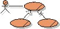
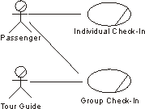
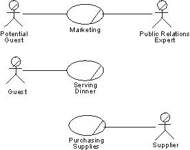
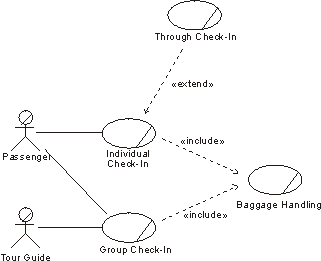
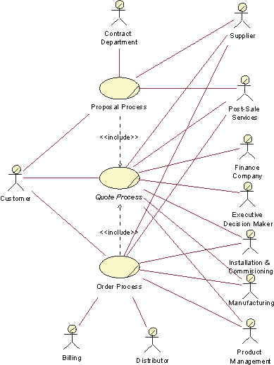

Artifacts >
Artifacts >
 Business Modeling Artifact Set >
Business Modeling Artifact Set >
 Business Use-Case Model... >
Business Use-Case Model >
Business Use-Case Model... >
Business Use-Case Model >
 Guidelines >
Business Use-Case Model
Guidelines >
Business Use-Case Model
Artifacts >
Business Modeling Artifact Set >
Business Use-Case Model... >
Business Use-Case Model >
Guidelines >
Business Use-Case Model
Guidelines:
|
 Business Use-Case Model |
A business use-case model is a model that describes the processes of a business and their interactions with external parties like customers and partners. |
A primary purpose of the model of business use cases and actors is to describe how the business is used by its customers and partners. Activities that directly concern the customer, or partner, as well as supporting or managerial tasks that indirectly concern the external party can be presented.
The model describes the business in terms of business use cases, which correspond to what are generally called "processes".

Actors and use cases at the check-in counter.
When looking at the activities in a business you will be able to identify at least three categories of work corresponding to three categories of business use cases:
Typically, a management type of business use case describes in general the relationships between the CEO, and people who work in the business use cases. It also describes how business use cases are developed and "started" (instantiated).

At a restaurant, the core business use cases are marketing and serving dinner, and the supporting business use case is purchasing supplies.
Note that what you regard as a core business use case can sometimes be a supporting business use case in another business. For example, software development is a core business use case in a software development company, while it would be classified as a supporting business use case in a bank or an insurance company.
A business has many business use cases. Instances of several different business use cases, as well as several instances of a single business use case, will normally execute in parallel. There may be an almost unlimited number of paths a use-case instance can follow. These different paths represent the choices open to the use-case instance in the workflow description. Depending on specific events or facts, a use-case instance can proceed along one of several possible paths; for example:
In modeling business use cases, you can assume that use-case instances can be active concurrently without conflicting. At this stage of business development, you should focus on what the business should do. Solve potential resource conflicts during work modeling, at which stage you try to understand how things should work in the business. Or you can solve these problems during the implementation of the new organization by increasing the number of employees who can perform the critical task.
Every core business use case should have a communicates-relationship to or from a business actor. This rule enforces the goal that businesses be built around the services their users request. If your business use-case model has business use cases that no one requests, this should warn you that something is wrong with the model.
Business use cases can be triggered periodically or they can run for a very long time; a surveillance function is an example of the latter. Even these business use cases have business actors that originally initiated them, and expect different services from them. Otherwise they would not be part of the business. Other business use cases will produce results for a business actor, although they are not explicitly initiated by the business actor. For example, the development of a widely distributed product is seldom initiated by an identifiable customer. Instead, the need for a new product is realized from market studies and the accumulated requests of many users.
Management and supporting business use cases do not necessarily need to connect to a business actor, although they normally have some kind of external contact. A management business use case, for instance, might have the owners of the business, or the board, as its business actor.
Abstract business use cases do not need a business actor, because they are never instantiated ("started") on their own.
There are three main reasons for structuring the business use-case model:
To structure the business use cases, we have three kinds of relationships. You will use these relationships to factor out pieces of business use cases that can be reused in other business use cases, or that are specializations or options to the business use case. The business use case that represents the modification we call the addition use case. The business use case that is modified we call the base use case.

Actors and use cases and the check-in counter. Here we also show the inclusion use case Baggage Handling and the extension use case Through Check-In.
You can use actor-generalization to show how actors are specializations of one another. See also Guidelines: Actor-Generalization in the Business Use-Case Model.
See also the discussion on structuring system use cases in Guidelines: Use-Case Model.
Especially when developing business models just to "prime the pump" for a software engineering project, you need to carefully delimit the business modeling effort. It is in this case rarely worth it to span the whole organization, even if you only model a subset of the business processes. To be able to stay focused and produce results that are of the expected value you should choose to consider a part of the whole company your "business system", and the part you choose should be the part that might directly use the system to be built. The parts of the organization you decide to treat as external to the model can be represented as business actors.
Example:
The Company has decided to undertake an effort to build a new application for sales and order management. To explore the needs of the organization, and also to align the way business is done throughout the organization, the first step is to build a set of business models. The departments of The Company that will not actively use the new order application are considered external to the model, and are represented with business actors.

Business actors and business use cases in a business use-case model of an order management organization. This organization sells complex solutions, custom made to each customer.
Brief descriptions of the business use cases:
Order Process: This process describes how The Company takes appropriate actions to deliver a solution to a Customer as defined by a set of customer requirements. The process starts when there is a business decision to proceed with an agreed solution. This may often be in the form of The Company receiving a purchase order from a Customer. It ends when the Customer is satisfied with the installment and commission of the solution and payment is received. The objective is to in a profitable way satisfy customer requirements.
Proposal Process: This is the process of generating a proposal(s) in response to customer requirements. The process is triggered by an inquiry from a Customer and ends when the Customer accepts (or rejects) any of the quote(s) in the proposal. The objective is to reach agreement on a quote that is acceptable both to the Customer and to The Company.
Quote Process: The Quote Process is an abstract business use case that is included in both the Proposal Process and the Order Process. The process begins when there are customer requirements that need a quote produced for it. The objective of the Quote Process is to produce a solution meeting the customer requirements, and to provide it along with a price.
A survey description of the business use-case model should:
Example:
This business use-case model covers the part of our Company that manages orders from our customers, since only this part is of interest to the software engineering project that will use the results of business modeling as an input. For this reason, we do not include the parts of the Company that handles billing, manufacturing, product management, and product development; they are considered external and therefore represented as business actors.
In this organization, a sale involves not just the agreement on a solution, but also to actually build the solution. To define a price for a solution, you need to engineer and build it to a certain level of detail. That is what is done in the Proposal Process. Once an agreement has been made with the customer, the solution is engineered in all details and then installed at the customer site. This is what is described in the Order Process. Both the Proposal Process and the Order Process include the abstract business use case Quote Process.
- Few use cases make the model easier to understand.
- Many use cases may make the model difficult to understand.
- Large use cases may be complex and difficult to understand.
- Small use cases are often easy to understand. However, make sure that the use case describes a complete workflow that produces something of value for a customer.
|
Rational Unified
Process
|